عند أول فتح للموقع، يطلب منك أن تعرّفنا بنفسك. وهذا مرة واحدة فقط على كل جهاز.
اكتب اسمك (ثنائي أو ثلاثي).
اكتب رقم الواتساب الخاص بك (الأرقام الـ 11 كاملة).
اضغط سجّل، فتظهر لك المواد مباشرة.
لماذا الاسم والرقم؟ الاسم لنرحّب بك، ويُكتب على نسخة المواد التي تفتحها. والرقم لتصلك التحديثات، ولنتأكد أنك معنا في المجموعة.
لديك حساب على جهاز آخر؟ لا تسجّل من جديد: اضغط لديّ حساب على جهاز آخر واكتب كود الربط (انظر الخطوة 11)، فينتقل تقدّمك كله معك.
2أضف الموقع إلى شاشة هاتفك
بهذا يصبح الموقع أيقونة مثل أي تطبيق، تفتحه بلمسة دون البحث عن الرابط.
آيفون (Safari)
افتح الموقع في Safari.
اضغط زر المشاركة (مربع يخرج منه سهم لأعلى). لم تجده؟ اضغط النقاط الثلاث أولًا.
اختر إضافة إلى الشاشة الرئيسية، وبعدها إضافة.
إن كانت لغة هاتفك الإنجليزية:Share → Add to Home Screen → Add
أندرويد (Chrome)
افتح الموقع في Chrome.
اضغط النقاط الثلاث في الأعلى.
اختر تثبيت التطبيق أو إضافة إلى الشاشة الرئيسية.
إن كانت لغة هاتفك الإنجليزية:⋮ → Install app / Add to Home screen
⚠ على الآيفون: للأيقونة حفظ مستقل، منفصل عن Safari. فإن فتحتها وطلبت اسمك مرة أخرى، اضغط لديّ حساب على جهاز آخر واربطها بالكود (الخطوة 11)، بدل أن تبدأ من الصفر. وبعدها ذاكر من الأيقونة دائمًا.
وعلى الكمبيوتر؟ افتح الرابط في أي متصفح.
3افتح مادة
في الصفحة الرئيسية، تحت «مواد الكلية» و«كورسات»، لكل مادة بطاقة فيها عدد الدروس والأسئلة. اضغط البطاقة لتفتح ملف المذاكرة (الدروس والأسئلة)، وفيه ستقضي معظم وقتك.
ابدأ: لمادة لم تفتحها بعد.
أكمل: لمادة بدأتها، ومعها شريط يوضح نسبة الأسئلة التي حللتها.
«أكمل من حيث توقفت» أعلى الصفحة: يعيدك إلى آخر درس فتحته.
أول فتح لأي مادة يحتاج إنترنت، وبعده تُحفظ على جهازك.
وإن أرسل لك أحد كود مادة (مواد خاصة بمجموعة معيّنة)، اضغط لديّ كود مادة في الرئيسية واكتبه.
4داخل المادة: الأزرار والتبويبات
عند أول فتح للمادة، اضغط ابدأ بأول درس. والخريطة في أعلى تبويب «الدروس» توصلك إلى أي درس.
الأزرار في الأعلى
العدسة: البحث في المادة كلها (اكتب كلمة بالعربية أو الإنجليزية).
الدائرة نصف السوداء: الوضع الفاتح والغامق.
علامة الاستفهام: طريقة الاستخدام باختصار، ومعنى كل علامة.
تقدّميأين وصلت في المادة، والتدريب بكل طرقه: الأخطاء، والغادرة، والتكرار المتباعد (الخطوة 7).
التحديثات والمصادرما أُضيف أو صُحّح في كل إصدار، والملفات التي أُخذ منها الشرح.
معنى كل علامة في الشرح (مثل «➕ إضافة مني»، و«⚠»، والسهم في آخر المعادلة) في «معنى كل رمز» في آخر هذه الصفحة.
5حلّ سؤالًا واطّلع على الحل
الأسئلة في تبويب «بنك الأسئلة»، وفي آخر كل درس. وهي نوعان:
اختيار من متعدد
قبل أن تختار، حدّد هل أنت متأكد أم لا: واثق أو مش متأكد.
اضغط الاختيار. يصبح الصحيح أخضر، والخاطئ أحمر.
ويظهر تحته «الحل بالتفصيل»، وسبب صحة الصحيح، وسبب خطأ كل اختيار آخر.
تريد المحاولة مرة أخرى؟ جاوب تاني.
إن كنت واثقًا وأخطأت، يُسجَّل السؤال «غادرًا». وهذه أخطر الأخطاء قبل الامتحان، وتجدها وحدها في «تقدّمي».
مسائل بخطوات
حلّها على ورقة أولًا.
اضغط اكشف أول خطوة، ثم الخطوة الجاية خطوةً خطوة، وقارن بحلّك.
أو اكشف الحل كله مرة واحدة.
تريد المذاكرة من الحلول مباشرة؟ في «بنك الأسئلة»، تحت «طريقة العرض»، اختر اعرض كل الإجابات مرة واحدة. واسم الدرس أعلى السؤال يعيدك إلى شرحه.
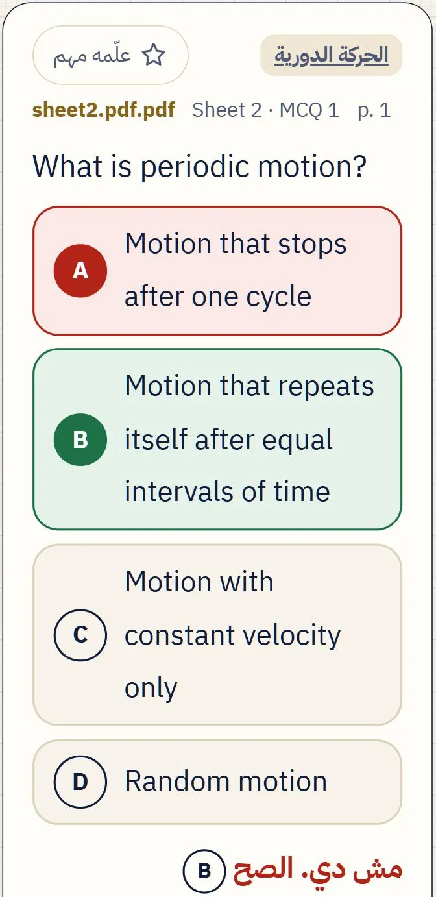
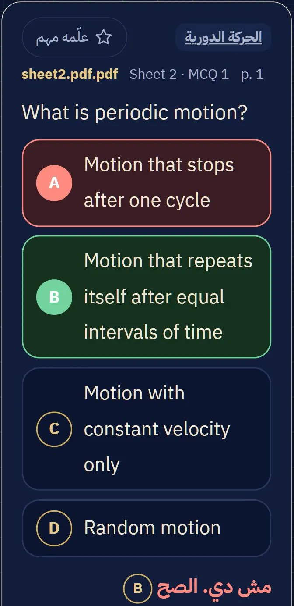
بعد الاختيار: الخاطئ أحمر، والصحيح أخضر
6علامة «مهم»
علّم أي شيء تريد الرجوع إليه قبل الامتحان:
في الشرح: اضغط النجمة في ركن الجزء، فتضيء بالذهبي.
في الأسئلة: اضغط علّمه مهم.
كل ما علّمته يُجمع في تبويب «المهم»، ومنه:
درّبني على الأسئلة المهمة.
صدّر لأنكي: بطاقات مراجعة لبرنامج أنكي على الكمبيوتر (إن كنت تستخدمه).
وفي بعض المواد، في «المهم» فهرس: تختار المحاضرة، والنوع (شرح أو أسئلة)، والدرس.
ولإزالة العلامة، اضغط النجمة مرة أخرى.
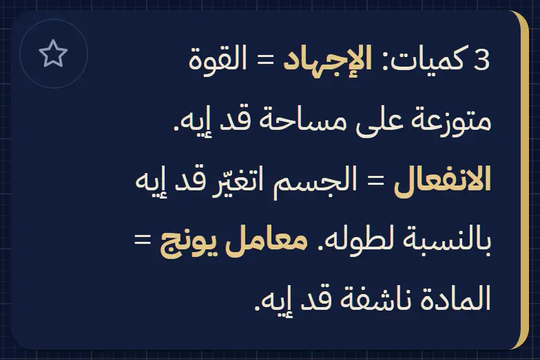
النجمة في ركن كل جزء
7«سجل غلطاتي» والتدريب
كل سؤال تحلّه يُسجَّل. وفي تبويب «تقدّمي» تجد: كم سؤالًا أجبت، وكم أصبت في آخر مرة، وكم يحتاج مراجعة. وتحتها طرق التدريب:
سجل غلطاتي: كل سؤال أخطأت فيه ولو مرة، حتى لو حللته صحيحًا بعدها. ويبقى هنا حتى تحذفه بنفسك. اضغط راجعهم لتتدرّب عليها، أو اعرض القايمة لتراها.
الأسئلة الغادرة: ما كنت واثقًا منه وتبيّن أنه خطأ.
ما أخطأت فيه آخر مرة: كل سؤال كانت آخر إجابة لك فيه خاطئة.
ما لم تجب عنه بعد، وتكرار متباعد على البنك كله.
حسب المحاضرة والدرس:درّبني بجانب كل درس.
معنى التكرار المتباعد: السؤال الذي تخطئ فيه يعود إليك بعد 5 أسئلة، وإن صحّحته يعود مرة أخيرة بعد 10 ليثبت.
وفي «بنك الأسئلة» مرشّح سجل غلطاتي أيضًا، لترى هذه الأسئلة بحلولها.
تبويب «تقدّمي»
8امتحان محاكاة
ينشئ لك تبويب «امتحان محاكاة» امتحانًا بأسئلة عشوائية، وتتغيّر أماكن الاختيارات كل مرة.
اختر نوع الأسئلة: اختيار من متعدد، أو مسائل، أو كليهما.
اختر العدد: 10، أو 20، أو الكل.
اختر محاضرة كاملة أو دروسًا معيّنة، وابدأ.
أجب، ثم سلّم. تظهر النتيجة والحل المفصّل بعد التسليم.
المسائل تحلّها على ورقة، وبعد التسليم ترى الحل وتقيّم نفسك.
امتحان بوقت: في بعض المواد، في أول التبويب بطاقة امتحان بعدد أسئلة ثابت وعدّاد تنازلي يسلّم تلقائيًا عند انتهاء الوقت. وفي النهاية ترى نتيجتك في كل محاضرة، والدروس التي تحتاج إلى مذاكرتها.
9«ملاحظاتك»: أرسل أي خطأ
وجدت خطأً؟ شيئًا غير واضح؟ تريد تغيير شيء؟ أرسله من داخل المادة:
اضغط فقاعة الكلام في الأعلى.
اكتب ملاحظتك، أو 🎙 سجّل صوت، أو 🖼 ضيف صورة.
اضغط 📍 حدد الجزء بالظبط، ثم اضغط الجزء نفسه أو السؤال، فيصلنا المكان دون أن تشرحه.
اضغط ابعت.
تصلنا الملاحظة مباشرة، وقد يصلك رد في رسالة أعلى الصفحة. وكل تصحيح يُكتب في تبويب «التحديثات».
«ملاحظاتك»
10«حسابك» ووقت مذاكرتك
اضغط حسابك (أو اسمك) في الشريط أعلى الموقع. وفي الصفحة:
تقدّمك في الأسئلة: في كل المواد معًا، وفي كل مادة وحدها.
وقت مذاكرتك: اليوم، وآخر أسبوع أو شهر، ومنذ البداية. ورسم لكل يوم، ووقت كل مادة.
أسئلة أخطأت فيها: آخر الأسئلة التي أخطأت فيها في كل المواد، وما كُتب عليه «صحّحتها» كانت آخر إجابة لك فيه صحيحة.
آخر جلسات المذاكرة، وأجهزتك.
كود مادة: إن أرسل لك أحد كودًا لمادة خاصة، اكتبه هنا لتظهر المادة في الصفحة الرئيسية.
يُحسب الوقت تلقائيًا وأنت تفتح المادة. وإن كنت تذاكر على أكثر من جهاز، فاربطها (الخطوة 11) ليُجمع وقتك وتقدّمك هنا. ويمكنك تعديل اسمك أو رقمك من الصفحة نفسها.
11اربط جهازًا آخر بالكود
تذاكر على الهاتف والكمبيوتر؟ اربطهما مرة واحدة، وبعدها تصل كل إجابة أو علامة «مهم» أو خطأ من جهاز إلى الآخر تلقائيًا، في كل المواد.
على الجهاز القديم (المسجَّل عليه)
افتح صفحة «حسابك»، وانزل إلى بطاقة «حسابك على أكثر من جهاز».
اضغط اربط جهازًا آخر، فيظهر لك كود من 6 أرقام.
على الجهاز الجديد
افتح الموقع، واضغط سجّل، ثم لديّ حساب على جهاز آخر.
اكتب الكود، واضغط اربط هذا الجهاز.
الكود صالح لمرة واحدة، ولمدة قصيرة. فإن ظهر أن الكود خاطئ أو انتهت صلاحيته، أنشئ كودًا جديدًا من الجهاز القديم. والربط يحتاج إنترنت على الجهازين.
تريد التأكد من وصول كل شيء؟ اضغط زامن الآن في البطاقة نفسها.
12المذاكرة دون إنترنت
افتح الموقع مرة والإنترنت متصل. ستظهر لك رسالة: «✓ حُفظ الموقع على جهازك، ويفتح دون إنترنت».
افتح كل مادة تحتاجها مرة والإنترنت متصل، فتُحفظ هي أيضًا.
بعد ذلك افتحها في أي وقت، حتى في المواصلات أو والإنترنت مقطوع.
إجاباتك وعلاماتك دون إنترنت تُحفظ على جهازك، وعند عودة الإنترنت تُزامَن مع حسابك تلقائيًا.
وعند تحديث مادة، تُنزَّل النسخة الجديدة تلقائيًا عند فتحها والإنترنت متصل، وتحل محل القديمة. أي أن المساحة على هاتفك لا تزيد.
13ملف PDF للطباعة
تريد المذاكرة من الورق، أو القراءة دون الموقع؟ لكل مادة ملف جاهز: الغلاف، والفهرس، والدروس بالرسومات، ومسائل الشيت وحلولها.
داخل المادة اضغط زر PDF في الأعلى.
اختر المادة كاملة، أو محاضرة وحدها (أصغر وأسرع).
يُنزَّل الملف مرة، ويبقى على جهازك. لكن الأسئلة التفاعلية والتدريب وحفظ إجاباتك في الموقع فقط، لا في الملف.
★مميزات الموقع
شرح من الصفركل مصطلح يُشرح عند أول ظهور له، والجمل المهمة في الشرائح مكتوبة بالإنجليزية كما هي وتحتها الترجمة، وبجانب كل معلومة رقم الشريحة.
حل لكل سؤالالمسائل بخطوات تكشفها خطوةً خطوة، والاختيار من متعدد معه سبب صحة الصحيح وخطأ كل اختيار.
تدريب يركّز على أخطائكما تخطئ فيه يعود إليك حتى يثبت، و«سجل غلطاتي» لا يُمسح إلا بيدك.
امتحان محاكاةبالعدد والمحاضرات التي تختارها، والحل المفصّل بعد التسليم.
دون إنترنتتُحفظ المادة على جهازك بعد أول فتح، وتُحفظ إجاباتك وتُزامَن عند عودة الإنترنت.
كل أجهزتك معًااربط الهاتف والكمبيوتر بكود، فيُجمع تقدّمك ووقتك في «حسابك».
«المهم» الخاص بكعلّم أي جزء أو سؤال، وارجع إليه أو تدرّب عليه، أو صدّره بطاقاتِ مراجعة.
ملاعب في الدروسرسومات تتحرك وتغيّر أرقامها بنفسك، لترى الفكرة بعينك.
ملاحظاتك تصلناكل خطأ ترسله من «ملاحظاتك» نراجعه، ويظهر التصحيح في «التحديثات».
ملف للطباعةللمادة كلها أو لكل محاضرة وحدها.
معنى كل رمز
مثل مفتاح الخريطة: كل علامة وزر في الموقع وفي ملفات المواد، وشكله ومعناه. الصور مأخوذة من الملفات نفسها.
في الموقع
الختم والحلقة حوله
في الحلقة 8 شُرَط: فصلان دراسيان في كل سنة، لمدة 4 سنوات. وبين كل فصل والذي يليه نقطة هي امتحان ذلك الفصل.
الشرطة الذهبية هي الفصل الحالي (الفصل الأول)، والنقطة التي حولها دائرة ذهبية هي الامتحان القادم. وكلما انتهى فصل أضاءت شرطة جديدة.
ابدأأكمل
بطاقة المادة في الرئيسية
اضغط البطاقة لتفتح ملف المذاكرة مباشرة.
«ابدأ» لمادة لم تبدأها بعد، و«أكمل» لمادة بدأتها، ومعها شريط يوضح نسبة الأسئلة التي حللتها.
✓ حُفظ الموقع على جهازك
محفوظ على جهازك
الموقع وكل مادة فتحتها محفوظة على جهازك، فتفتح حتى دون إنترنت. لكن أول فتح لأي مادة يحتاج إنترنت.
وإذا حُدّثت المادة، تُنزَّل النسخة الجديدة تلقائيًا عند فتحها والإنترنت متصل.
PDF · المادة كلهاPDF · المحاضرة 1
ملفات الطباعة (PDF)
من زر «PDF» أعلى ملف المادة: ملف للمادة كلها، وملف لكل محاضرة وحدها إن أردت طباعة جزء فقط.
بعد تنزيل الملف يبقى على جهازك.
اربط جهازًا آخرزامن الآن
حسابك على أكثر من جهاز
إن كنت تذاكر على الهاتف والكمبيوتر: من صفحة حسابك اضغط «اربط جهازًا آخر»، واكتب الكود (6 أرقام) على الجهاز الآخر. بعدها تصل كل إجابة أو نجمة إلى الجهاز الآخر تلقائيًا.
وفي الصفحة نفسها وقت مذاكرتك وتقدّمك في كل مادة.
لديك كود مادة؟
كود مادة
بعض المواد خاصة بمجموعة معيّنة. إن أرسل لك أحد كودها، افتح صفحة «حسابك» واكتبه في بطاقة «لديك كود مادة؟»، فتظهر لك المادة في الرئيسية.
أعلى ملف المادة
الأزرار في الأعلى
الدائرة نصف السوداء: الوضع الفاتح والغامق.
علامة الاستفهام: طريقة الاستخدام في 4 خطوات، وتحتها «مفتاح الرموز»: كل علامة في الملف ومعناها (مثل هذه الصفحة باختصار).
فقاعة الكلام «ملاحظاتك»: أرسل لنا خطأً أو سؤالًا (انظر أسفل).
«أ−» و«أ+»: صغّر الخط أو كبّره، ويُحفظ المقاس.
«PDF»: ينزّل ملف الطباعة: المادة كلها، أو محاضرة وحدها.
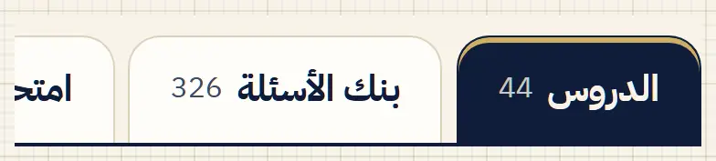
التابات
الدروس: الشرح، والرقم بجانبها عدد الدروس.
بنك الأسئلة: كل الأسئلة بحلولها، والرقم عددها.
امتحان محاكاة: امتحان بأسئلة عشوائية.
النجمة (المهم): كل ما علّمته مهمًا.
تقدّمي: أين وصلت، والتدريب على أخطائك.
التحديثات والمصادر: ما تغيّر في كل إصدار، والملفات التي أُخذ منها الشرح.
علامات المصادر
«➕ إضافة مني»: شرح أو مثال إضافي من مُستدرِك، غير موجود في ملفات الدكتور.
«⚠»: خطأ أو نقص في الملفات، والصواب مكتوب بجانبه. وفي آخر كل محاضرة درس يجمع أخطاءها.
«سكشن 1» أو «محاضرة»: المعلومة من تفريغ السكشن أو المحاضرة، لا من الشرائح.
داخل الدروس
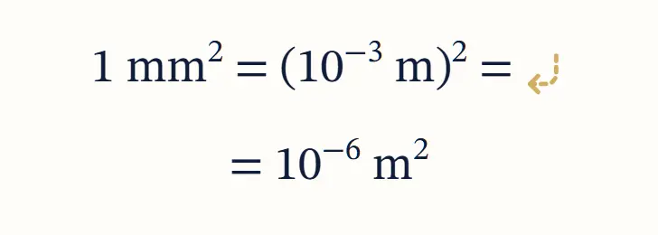
السهم في آخر المعادلة
المعادلة طويلة ولا يتسع لها سطر واحد على الهاتف، فقُسّمت عند علامة «=».
السهم معناه: المعادلة تكتمل في السطر التالي. وتُكتب علامة «=» مرتين: في آخر السطر الأول وفي أول السطر الثاني، لتعرف أنهما معادلة واحدة.
النجمة: علّمه مهم
في ركن كل جزء من الشرح وكل سؤال نجمة. اضغطها ليُعلَّم الجزء مهمًا، فتضيء النجمة بالذهبي:
غير معلَّم معلَّم
كل ما علّمته يُجمع في تبويب «المهم»، ويمكنك التدرّب على أسئلته أو تصديره بطاقاتِ أنكي.
والصندوق الذي على جانبه خط ذهبي: الفكرة الأساسية في الدرس.
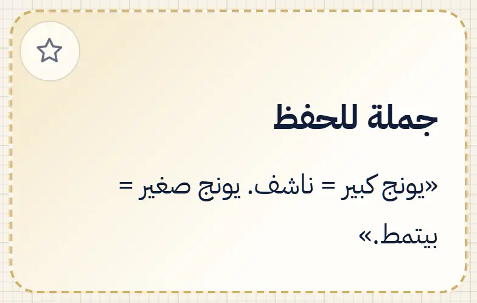
جملة للحفظ
الصندوق الذهبي المتقطّع: جملة أو تشبيه يسهّل عليك تذكّر القاعدة.
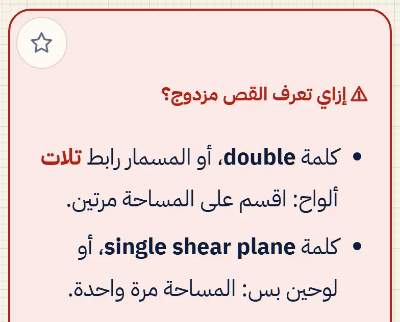
صندوق أحمر بعلامة «⚠»
فخ: خطأ شائع في الامتحان، أو فرق صغير يغيّر الإجابة. اقرأه جيدًا.
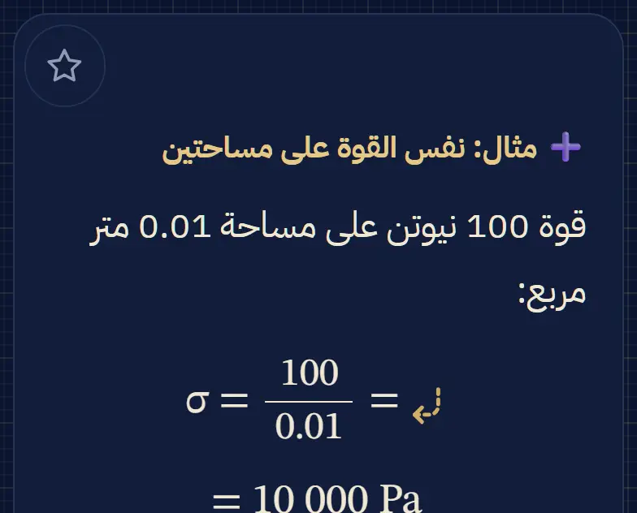
المثال
مثال محلول: في أعلاه السؤال بصياغته الإنجليزية كما في الامتحان، وتحته «المطلوب:» بالعربية، ثم الحل خطوة بخطوة.
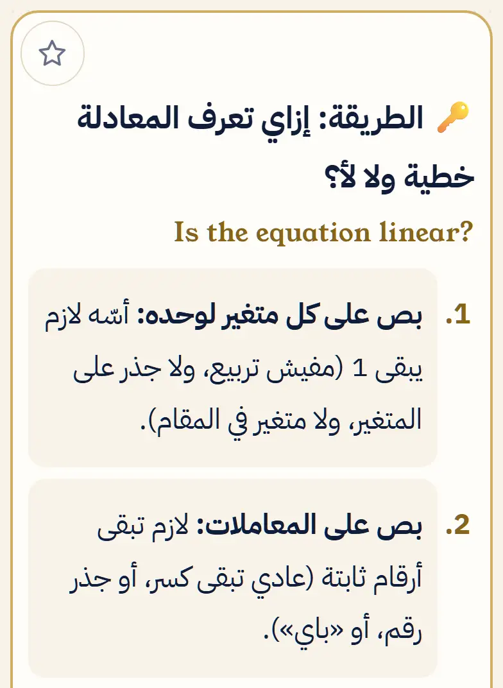
صندوق «الطريقة»
طريقة الحل في خطوات بأسهم، ومعها رسمة. وعند أول ظهور للطريقة تُكتب كل خطواتها وحساباتها.
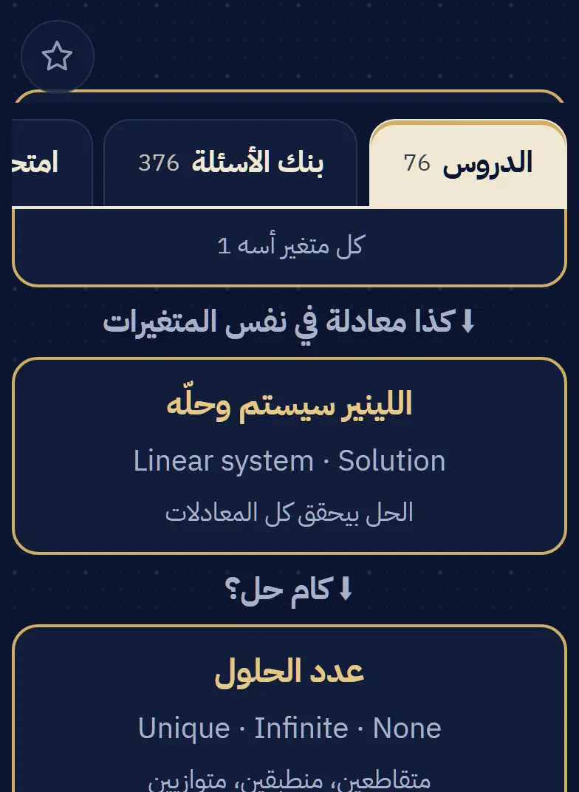
خريطة المحاضرة
في آخر كل محاضرة: خريطة تربط أفكارها ببعض، لترى الصورة كاملة قبل الامتحان.
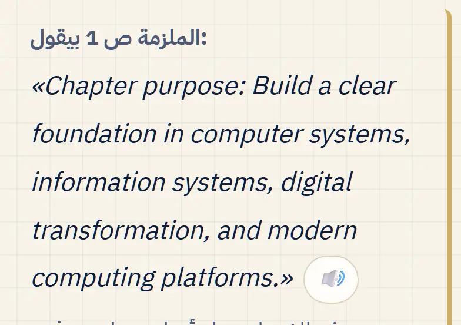
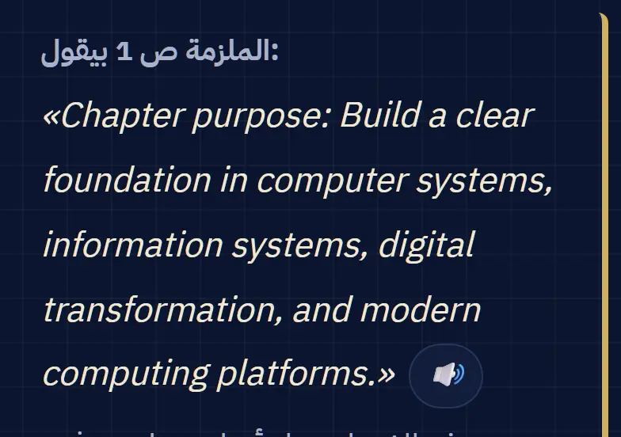
جملة الشريحة وترجمتها
الجمل المهمة في الشرائح مكتوبة بالإنجليزية كما هي (لأنها التي تأتي في الامتحان)، وتحتها «يعني:» والترجمة، ثم الشرح.
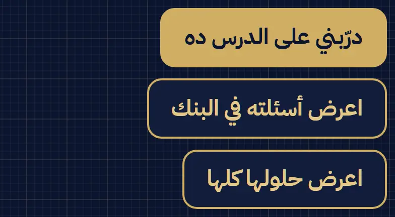
آخر كل درس
«درّبني على الدرس ده»: أسئلة الدرس واحدًا تلو الآخر.
«اعرض أسئلته في البنك» و«اعرض حلولها كلها»: إن أردت المذاكرة من الحلول مباشرة.
في الأسئلة
بطاقة السؤال
اسم الدرس في الأعلى: اضغطه ليعيدك إلى شرحه.
«من عندي»: السؤال من مُستدرِك، لا من ملفات الدكتور.
«واثق» و«مش متأكد»: قبل أن تختار، حدّد هل أنت متأكد أم لا. فإن كنت واثقًا وأخطأت، يُسجَّل السؤال «غادرًا»، وهذه أخطر الأخطاء قبل الامتحان، فتجدها وحدها في «تقدّمي».
بعد أن تختار: يظهر الحل، وسبب صحة كل اختيار أو خطئه.
تبويب «المهم»
كل جزء أو سؤال علّمته بالنجمة. ومنه: «درّبني على الأسئلة المهمة»، و«صدّر لأنكي» (برنامج بطاقات مراجعة على الكمبيوتر).
التدريب والمحاكاة
تبويب «تقدّمي»: التدريب
في الأعلى: كم سؤالًا أجبت، وكم أصبت في آخر مرة، وكم يحتاج مراجعة. وتحتها طرق التدريب:
الأسئلة الغادرة: ما كنت واثقًا منه وتبيّن أنه خطأ.
ما أخطأت فيه آخر مرة.
سجل غلطاتي: كل سؤال أخطأت فيه ولو مرة، حتى تحذفه بنفسك.
تكرار متباعد: ما تخطئ فيه يعود إليك بعد 5 أسئلة، وإن صحّحته يعود مرة أخيرة بعد 10 ليثبت.
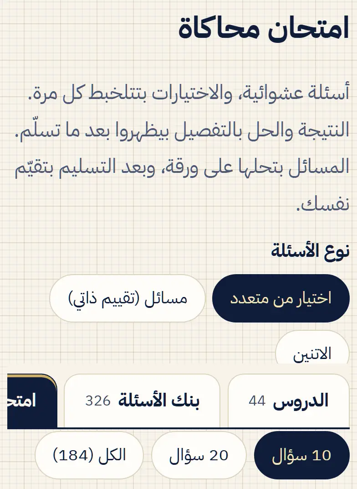
امتحان محاكاة
امتحان بأسئلة عشوائية، وتتغيّر أماكن الاختيارات كل مرة. تختار النوع (اختيار من متعدد، أو مسائل، أو كليهما)، والعدد، والمحاضرات أو الدروس.
تظهر النتيجة والحل المفصّل بعد التسليم. والمسائل تحلّها على ورقة، ثم تقيّم نفسك بعد التسليم.
ملاحظاتك
أرسل لنا ملاحظة
زر «ملاحظاتك» في أعلى أي مادة: إن وجدت خطأً، أو شيئًا غير واضح، أو أردت تغيير شيء. اكتبها، أو سجّلها بصوتك، أو صوّرها. واضغط «حدد الجزء بالظبط» ثم الجزء نفسه (أو نجمته، أو السؤال)، فنعرف المكان دون أن تشرحه.
ما زال شيء غير واضح؟ أرسله من «ملاحظاتك» داخل أي مادة، أو اسألنا على واتساب. ابدأ المذاكرة